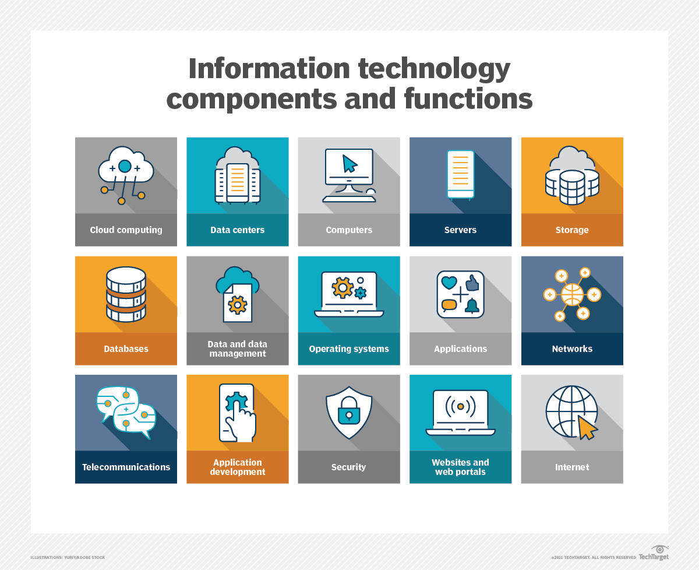

What is information technology?

Information technology (IT) is the use of any computers, storage, networking and other physical devices,
infrastructure and processes to create, process, store, secure and exchange all forms of electronic data.
Typically, IT is used in the context of business operations, as opposed to technology used for personal or
entertainment purposes. The commercial use of IT encompasses both computer technology and telecommunications.